Section 13: Final Exam Prep
Jed Rembold and Eric Roberts
Week of December 4th
Problem 1a: Tracing
- Trace the below function to determine its output
def mystery(x, y=10):
z = len(x)
return puzzle(x, y) + puzzle(w[:enigma(z, 3)], y)
def enigma(x, w):
return x - w ** 2
def puzzle(y, z):
return y[z:]
w = "gingerbread man"
print(mystery(w, -3))Problem 1b: Tracing
- What is printed at the end?
class Frosty:
def __init__(self, n, c):
self.wild = [c]
self.n = n
def snowball(self, h=3):
self.n -= h
self.wild += [self.n]
def cap(self):
return self.wild
f = Frosty(8, 15)
f.snowball()
f.snowball(1)
A = f.cap()
A.append(1)
print(sum(f.cap()))Problem 2: Fundamentals
The Racamán sequence starts at 0, termed \(a_0\)
Future values in the sequence are given by:
\[ a_n = \begin{cases} a_{n-1}-n, &\text{if $a_{n-1}-n > 0$ and has not already appeared in the sequence} \\ a_{n-1} + n, & \text{otherwise}\end{cases} \]
Thus
\[ \begin{aligned} a_0 &= 0\\ a_1 &= 1\\ a_2 &= 3\\ a_3 &= 6\\ a_4 &= 2\\ a_5 &= 7\\ \end{aligned} \]
Problem 2 continued
Write a function called
racaman(n)which takes as an argument a single integer and returns the nth value of the Racamán sequence>>> print(racaman(3)) 6 >>> print(racaman(6)) 13
Problem 2 - Possible Solution
def racaman(n):
if n == 0:
return 0
seq = [0] #a_0 starting case
for i in range(1, n+1):
potential = seq[i-1] - i
if potential > 0 and potential not in seq:
seq.append(potential)
else:
seq.append(seq[i-1] + i)
return seq[-1]Problem 3: Interactive Graphics

- The “Fifteen Puzzle” is a sliding puzzle with the numbers 1 through 15 on a set of square tiles
- One space in open, allowing neighboring tiles to be slid into the space
- Goal is to arrange the numbered tiles in order, from upper left to bottom right
Problem 3 - Step 1
- Write a program to display the starting state of the Fifteen Puzzle
- Each piece should be a
GCompoundcontaining a filled square and a centered number - Should resemble the image to the right

Problem 3 - Step 2
- Make the program interactive by having clicking on a piece move it
to the open space if possible
- Figure out which square you clicked on using
get_element_at - Check all 4 directions to see if any are both inside the window and unoccupied. If those conditions are met, move the clicked piece into the free space. Otherwise, do nothing.
- Figure out which square you clicked on using
Problem 3 - Possible Solution
from pgl import GWindow, GRect, GLabel, GCompound
SQUARE_SIZE = 60
GWINDOW_WIDTH = 4 * SQUARE_SIZE
GWINDOW_HEIGHT = 4 * SQUARE_SIZE
SQUARE_FILL_COLOR = "LightGray"
PUZZLE_FONT = "18px 'Sans-Serif'"
def create_piece(num):
compound = GCompound()
square = GRect(SQUARE_SIZE, SQUARE_SIZE)
square.set_filled(True)
square.set_fill_color(SQUARE_FILL_COLOR)
value = GLabel(str(num))
value.set_font(PUZZLE_FONT)
value.move(
SQUARE_SIZE / 2 - value.get_width() / 2,
SQUARE_SIZE / 2 + value.get_ascent() / 2,
)
compound.add(square)
compound.add(value)
return compound
def click_action(e):
mx, my = e.get_x(), e.get_y()
current = gw.get_element_at(mx, my)
if current is not None: #we clicked on a piece
# Search all 4 directions
for x, y in [(-1, 0), (1, 0), (0, -1), (0, 1)]:
cx = mx + x * SQUARE_SIZE
cy = my + y * SQUARE_SIZE
if ((0 < cx < GWINDOW_WIDTH) and
(0 < cy < GWINDOW_HEIGHT)):
elem = gw.get_element_at(cx, cy)
if elem is None: # the empty space!
current.move(x * SQUARE_SIZE,
y * SQUARE_SIZE)
return #stops the search early if we found it
gw = GWindow(GWINDOW_WIDTH, GWINDOW_HEIGHT)
for i in range(15):
p = create_piece(i + 1)
p.move(SQUARE_SIZE * (i % 4),
SQUARE_SIZE * (i // 4))
gw.add(p)
gw.add_event_listener("click", click_action)Problem 4: Strings and Files
- Suppose you have a data file similar to the one to the right
- Your task is to determine the first number that appears on a line and the last number that appears on a line, where a “number” consists of any number of consecutive digits
- The last number should be subtracted from the first, and you want to compute the total sum of this difference over all the lines of the file
baot234'yn8bas92*b
s2ba#9don71abis012
,fygx*@qnadb543nas- Write a function
process_file(filename)that will return this sum for any given file.
Problem 4 - Possible Solution
Problem 5: Defining Classes
- You want to create a class that will then produce numbered labels for you on demand
- Requirements:
- The constructor should take two arguments: a string indicating the desired prefix for the labels and an optional starting index for the sequence number, which defaults to 1.
- A
next_labelmethod that returns a string corresponding to the next numbered label in the sequence
Problem 5 - Testing
- You should be able to replicate:
>>> figures = LabelGenerator("Figure ")
>>> figures.next_label()
Figure 1
>>> figures.next_label()
Figure 2
>>> figures.next_label()
Figure 3
>>> figures = LabelGenerator("P", 0)
>>> figures.next_label()
P0
>>> figures.next_label()
P1Problem 6: Working with Data Structures
- “Hunt the Wumpus” involves a player character and the fearsome Wumpus moving through a network of connected rooms, a small portion of which is shown to the right
- A Wumpus is very smelly, and a player can smell the Wumpus from two rooms away
- Player and Wumpus location, as well as the rooms connectivity, is stored in a compound data structure, shown on the next page

Problem 6 - Data Structure
cave = {
"player": 2,
"wumpus": 19,
"connections": [
None, # Room 0 is not used
[6, 14, 16], # Room 1 connects to 6, 14, and 16
[3, 7, 18], # Room 2 connects to 3, 7, and 18
[2, 16, 20], # Room 3 connects to 2, 16, and 20
[6, 18, 19], # Room 4 connects to 6, 18, and 19
[8, 9, 11], # Room 5 connects to 8, 9, and 11
[1, 4, 15], # Room 6 connects to 1, 4, and 15
[2, 12, 19], # Room 7 connects to 2, 12, and 19
[5, 10, 13], # Room 8 connects to 5, 10, and 13
[5, 11, 17], # Room 9 connects to 5, 11, and 17
[8, 14, 16], # Room 10 connects to 8, 14, and 16
[5, 9, 18], # Room 11 connects to 5, 9, and 18
[7, 14, 15], # Room 12 connects to 7, 14, and 15
[8, 15, 20], # Room 13 connects to 8, 15, and 20
[1, 10, 12], # Room 14 connects to 1, 10, and 12
[6, 12, 13], # Room 15 connects to 6, 12, and 13
[1, 3, 10], # Room 16 connects to 1, 3, and 10
[9, 19, 20], # Room 17 connects to 9, 19, and 20
[2, 4, 11], # Room 18 connects to 2, 4, and 11
[4, 7, 17], # Room 19 connects to 4, 7, and 17
[3, 13, 17], # Room 20 connects to 3, 13, and 17
]
}Problem 6 - Your Task
- Write a predicate function called
player_smells_a_wumpus(world_data)which takes in a dictionary describing the world data (cavein the previous page example).- Your function should return
Trueif the player can smell the wumpus (is 2 or less rooms away) orFalseotherwise
- Your function should return